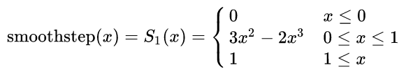
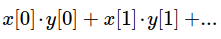
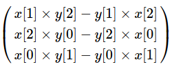

Описание математических функций GLSL на английском языке можно найти здесь: https://www.shaderific.com/glsl-functions. Более точное и полное описание функций можно найти в документации по OpenGL https://www.khronos.org/registry/OpenGL-Refpages/gl4/. Ниже будут перечислены математические функции GLSL с использованием русскоязычных обозначений.
Тригонометрические функции
sin(), cos(), tan(), asin(), acos(), atan()
В GLSL доступны основные тригонометрические функции. В качестве параметра функции может выступать просто одно значение, а может быть задан и вектор. На примере функции sin() это значит, что допустимы следующие варианты:
float sin(float angle)
vec2 sin(vec2 angle)
vec3 sin(vec3 angle)
vec4 sin(vec4 angle)
В случае передачи в функцию числа, функция вернет числовой результат. В случае передачи в функцию вектора, будет возвращен вектор такой же размерности. В нем будут размещены значения sin(), посчитанные для каждого элемента входящего вектора.
Доступны следующие тригонометрические функции:
sin() - синус
cos() - косинус
tan() - тангенс
asin() - арксинус
acos() - арккосинус
atan() - арктангенс
Входящие параметры (углы) этих функций задаются в радианах.
radians()
Для преобразования углов между градусами и радианами, существуют функции преобразования в одну и другую сторону.
radians() - функция конвертирования градусов в радианы. Допустимые варианты использования такие же как и у тригониметрических функций:
float radians(float degrees)
vec2 radians(vec2 degrees)
vec3 radians(vec3 degrees)
vec4 radians(vec4 degrees)
degrees()
degrees() - функция преобразования радиан в градусы:
float degrees(float radians)
vec2 degrees(vec2 radians)
vec3 degrees(vec3 radians)
vec4 degrees(vec4 radians)
Экспоненциальные функции
Все экспоненциальные функции, так же как и тригонометрические, поддерживают как обычную форму функции с одним значением, так и векторную форму. Для сокращения текста дальше будет писаться только основная форма функции. Векторная форма конструируется точно так же как и для тригонометрических функций.
pow()
Функция возведения в степень (x в степени y):
float pow(float x, float y)
exp()
Функция вычисления экспоненты (число e в степени x):
float exp(float x)
log()
Функция натурального логарифма:
float log(float x)
exp2()
Функция возведения двойки в степень x:
float exp2(float x)
log2()
Функция логарифма по основанию 2:
float log2(float x)
sqrt()
Функция вычисления квадратного корня:
float sqrt(float x)
inversesqrt()
Функция вычисления обратного квадратного корня (т. е. 1/sqrt(x)):
float inversesqrt(float x)
Основные математические функции
Основные математические функции так же имеют обычную и векторную форму. Для сокращения текста здесь описывается только основная форма.
abs()
Функция вычисления абсолютного значения (т. е. получаение модуля числа):
float abs(float x)
sign()
Функция вычисления знака числа:
float sign(float x)
Эта функция возвращает 1.0, если число положительное; 0.0 - если число равно нулю, -1.0 - если число отрицательное.
floor()
Функция округления дробного значения до ближайшего целого числа в меньшую сторону:
float floor(float x)
ceil()
Функция округления дробного значения до ближайшего целого числа в большую сторону:
float ceil(float x)
fract()
Функция получения дробной части числа (по сути, возвращает значение x-floor(x)):
float fract(float x)
mod()
Функция получения остатка от деления:
int mod(int x, int y)
float mod(float x, float y)
Для чисел с плавающей запятной в ответе будет содержаться целое число, просто в представлении дробного числа. Т. е. mod(9.0, 5.0) даст 4.0. Векторные варианты этой функции выглядят следующим образом:
vec2 mod(vec2 x, vec2 y)
vec3 mod(vec3 x, vec3 y)
vec4 mod(vec4 x, vec4 y)
vec2 mod(vec2 x, float y)
vec3 mod(vec3 x, float y)
vec4 mod(vec4 x, float y)
min(), max()
Функции получения минимального и максимального значения из двух параметров:
float min(float x, float y)
float max(float x, float y)
Векторные варианты этих функций следующие:
|
vec2 min(vec2 x, vec2 y) vec3 min(vec3 x, vec3 y) vec4 min(vec4 x, vec4 y) vec2 min(vec2 x, float y) vec3 min(vec3 x, float y) vec4 min(vec4 x, float y) |
vec2 max(vec2 x, vec2 y) vec3 max(vec3 x, vec3 y) vec4 max(vec4 x, vec4 y) vec2 max(vec2 x, float y) vec3 max(vec3 x, float y) vec4 max(vec4 x, float y) |
Функции цифровых фильтров
clamp()
Функция clamp() является функцией "зажима" значения в диапазоне. Если x меньше minVal, возвращается minVal. Если x больше maxVal, возвращается maxVal:
float clamp(float x, float minVal, float maxVal)
Векторные варианты этой функции выглядят так:
vec2 clamp(vec2 x, vec2 minVal, vec2 maxVal)
vec3 clamp(vec3 x, vec3 minVal, vec3 maxVal)
vec4 clamp(vec4 x, vec4 minVal, vec4 maxVal)
vec2 clamp(vec2 x, float minVal, float maxVal)
vec3 clamp(vec3 x, float minVal, float maxVal)
vec4 clamp(vec4 x, flfloat minVal, float maxVal)
mix()
Функция mix() вычисляет линейно интерполированное значение между значениями x и y, используя значение a в качестве весового коэффициента между ними. По сути, используется формула:
f(x, y, a) = х * (1.0 - а) + у * а
Значение числа a ограничивается диапазоном [0,1]. Варианты записи функции:
float mix(float x, float y, float a)
vec2 mix(vec2 x, vec2 y, vec2 a)
vec3 mix(vec3 x, vec3 y, vec3 a)
vec4 mix(vec4 x, vec4 y, vec4 a)
vec2 mix(vec2 x, vec2 y, float a)
vec3 mix(vec3 x, vec3 y, float a)
vec4 mix(vec4 x, vec4 y, float a)
Примеры значений функции mix() для разных чисел:
x=1
y=5
Если a=0.5 то результат 2.5
Если a=0.1 то результат 1.3
Если a=0.9 то результат 3.7
step()
Пороговая функция step(), или же единичная ступенчатая функция, возвращает 0.0, если переданное значение x меньше значения порога edge, иначе возвращает 1.0. Варианты записи функции:
float step(float edge, float x)
vec2 step(vec2 edge, vec2 x)
vec3 step(vec3 edge, vec3 x)
vec4 step(vec4 edge, vec4 x)
vec2 step(float edge, vec2 x)
vec3 step(float edge, vec3 x)
vec4 step(float edge, vec4 x)
smoothstep()
Функция smoothstep() является мягкой пороговой функцией, в которой в качестве рабочей функции используется кубическая интерполяция Гермита. Функция возвращает значение 0.0, если переданное значение x меньше значения edge0, и возвращает значение 1.0 если x больше значения edge1. Если же значение x лежит в диапазоне между edge0 и edge1, тогда возвращается интерполированное значение, высчитанное на основе x с помощью кубической Гермитовой интерполяции (по сути, это функция плавного кубического сплайна).
Для значений edge0=0 и edge1=1 математика выглядит так:

Однако edge0, edge1 и x могут принимать любые значения, интерполяция будет иметь так же форму сплайна, а результат будет смаштабирован и возвращен в диапазоне 0...1. Варианты записи функции smoothstep() следуюшие:
float smoothstep(float edge0, float edge1, float x)
vec2 smoothstep(vec2 edge0, vec2 edge1, vec2 x)
vec3 smoothstep(vec3 edge0, vec3 edge1, vec3 x)
vec4 smoothstep(vec4 edge0, vec4 edge1, vec4 x)
vec2 smoothstep(float edge0, float edge1, vec2 x)
vec3 smoothstep(float edge0, float edge1, vec3 x)
vec4 smoothstep(float edge0, float edge1, vec4 x)
Геометрические функции
lenght()
length() - это функция вычисления длинны вектора. Функция возвращает длину вектора в пространстве Евклида, то есть квадратный корень из суммы возведенных в квадрат компонентов вектора:
float length(float x)
float length(vec2 x)
float length(vec3 x)
float length(vec4 x)
Если в функцию передано просто значение с плавающей запятой (а не вектор), будет высчитано абсолютное значение.
distance()
distance() - это фунция вычисления расстояния между двумя точками. Разные варианты этой функции позволяют расчитывать длинну в пространстве с размерностью от 1 до 4:
float distance(float p0, float p1)
float distance(vec2 p0, vec2 p1)
float distance(vec3 p0, vec3 p1)
float distance(vec4 p0, vec4 p1)
Координаты точек для двумерного, трехмерного и четырехмерного пространств задаются в виде вектора.
dot()
Функция dot() вычисляет скалярное произведение двух векторов. Использование:
float dot(float x, float y)
float dot(vec2 x, vec2 y)
float dot(vec3 x, vec3 y)
float dot(vec4 x, vec4 y)
Результат функции высчитывается по следующей формуле:

cross()
Функция cross() вычисляет векторное произведение двух векторов. Использование:
vec3 cross( vec3 x, vec3 y);
dvec3 cross( dvec3 x, dvec3 y);
Результирующий вектор будет посчитан следующим образом:

normalize()
Функция normalize() возвращает нормализованный вектор длинной 1.0. По сути, функция нормализации берет вектор и делит его на его длинну. Использование:
float normalize(float x)
vec2 normalize(vec2 x)
vec3 normalize(vec3 x)
vec4 normalize(vec4 x)
В случае передачи в функцию значения с плавающей запятой (а не вектора), функция вернет 1.0.
faceforward()
Функция поворота вектора в направлении нормали (но это неточно). Использование:
float faceforward(float N, float I, float Nref)
vec2 faceforward(vec2 N, vec2 I, vec2 Nref)
vec3 faceforward(vec3 N, vec3 I, vec3 Nref)
vec4 faceforward(vec4 N, vec4 I, vec4 Nref)
К сожалению, найти внятного объяснения, что делает функция faceforward(), не получилось. Вот более-менее адекватные варианты:
reflect()
reflect() - функция получения отраженного вектора. Функция имеет два входных параметра: I - это падающий вектор, N - это вектор нормали отражающей поверхности:
float reflect(float I, float N)
vec2 reflect(vec2 I, vec2 N)
vec3 reflect(vec3 I, vec3 N)
vec4 reflect(vec4 I, vec4 N)
Примечание: для получения желаемого результата вектор N должен быть нормализован. Результирующий вектор отражения всегда имеет ту же длину, что и падающий вектор. Из этого следует, что вектор отражения нормализуется, если нормализованы N и I.
refract()
refract() - это функция преломления. Функция преломления возвращает вектор, указывающий в направлении преломления. Функция имеет три входных параметра: I - это падающий вектор, N - это вектор нормали отражающей поверхности, eta - коэффициент преломления:
float refract(float I, float N, float eta)
vec2 refract(vec2 I, vec2 N, float eta)
vec3 refract(vec3 I, vec3 N, float eta)
vec4 refract(vec4 I, vec4 N, float eta)
Примечание: для получения желаемого результата векторы I и N должны быть нормализованы.
Функции работы с матрицами (матричные функции)
inverse()
Функция получения обратной матрицы.
mat2 inverse( mat2 m);
mat3 inverse( mat3 m);
mat4 inverse( mat4 m);
matrixCompMult()
Функция matrixCompMult() используется для покомпонентного перемножения матриц. Использование:
mat2 matrixCompMult(mat2 x, mat2 y)
mat3 matrixCompMult(mat3 x, mat3 y)
mat4 matrixCompMult(mat4 x, mat4 y)
По сути, для компонентного перемножения использутся следующая формула:
z[i][j] = x[i][j] * y[i][j]
Примечание: это НЕ умножение матриц, известное из линейной алгебры. Для получения «нормального» умножения матриц можно использовать обычный символ оператора умножения, вот так:
mat3 x;
mat3 y;
mat3 z;
z = x * y